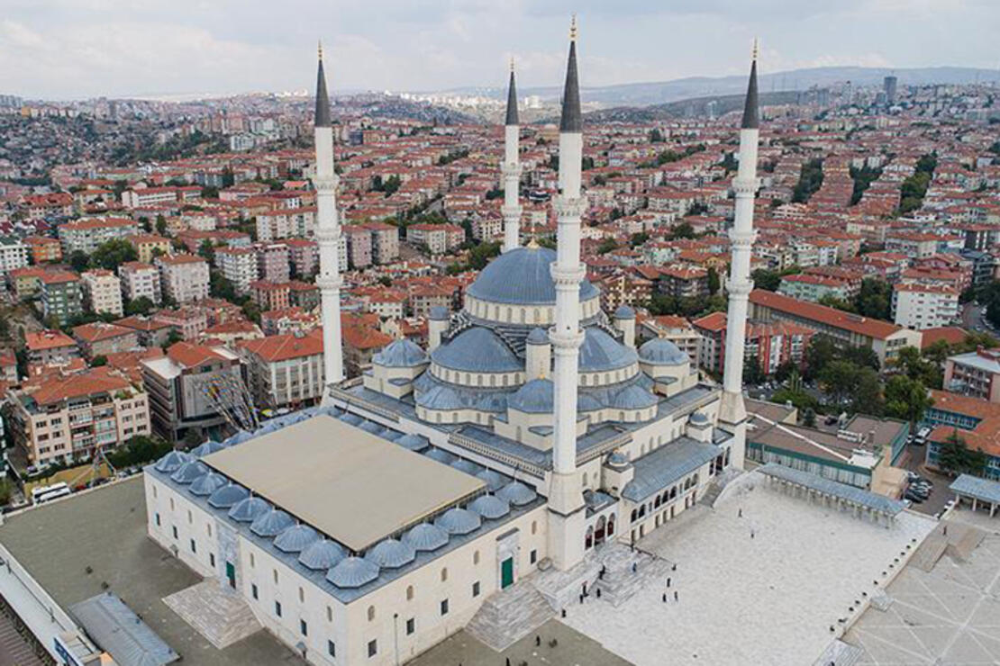

| ANASAYFA | İLETİŞİM | YAPIM | HAKKIMIZDA |
| KOCATEPE CAMİİ |
|  |
Türkiye’nin başşehri Ankara’da hızla artan nüfusa karşılık büyük bir caminin bulunmaması, özellikle Çankaya’ya doğru gelişen Yenişehir’de halkın ibadet ihtiyacını karşılayabileceği bir mescidin dahi olmaması göz önüne alınarak 1944 yılında Diyanet İşleri başkan yardımcısı Ahmet Hamdi Akseki başkanlığında bir cami yaptırma kurumu oluşturuldu. Bu kurumun açtığı yarışma neticesinde onaylanan ve Emniyet Âbidesi Parkı içinde uygulanması düşünülen projeden daha sonra vazgeçilmiştir. 1956’da Türkiye Diyanet Sitesi Yaptırma ve Yaşatma Derneği adını alan kurum 1957 yılında yeni bir proje hazırlatmış, bizzat devrin başbakanı Adnan Menderes’in ilgilenmesiyle caminin Ankara’ya hâkim bir tepe olan Kocatepe’de yapılmasına karar verilmiştir. Mimar Vedat Dalokay’ın hazırladığı projeye göre 1963 yılında caminin temeli atılmış, idare binaları 1964’te tamamlanmıştı. Ancak üstünün kabuk sistemiyle örtülmesi planlanan bu cami projesinden, sistemin o yıllar için çok yeni olması ve Ankara’da aynı sistemin uygulandığı bir spor salonunun çökmesi sebebiyle vazgeçilmiştir. Açılan yeni bir yarışma sonunda 4500 m2’lik bir alana yapılması düşünülen caminin proje çalışmalarını Hüsrev Tayla ile Fatin Uluengin üstlenmiş ve 30 Ekim 1967’de temel atılarak yeniden inşaata başlanmıştır. Fatin Uluengin 1975’te ayrılınca Hüsrev Tayla uygulama ve detay proje çalışmalarını tek başına yürütmüş, uygulama kontrollüğü de kendisine verilmiştir.
Geleneksel formlara bağlı kalınan bu yeni plana göre cami bir merkezî kubbe ile dört yarım kubbeden meydana gelen ve dört ayağa oturan bir şema göstermekteydi. Devlet yardımı ve halkın bağışlarıyla yürütülen çalışmalarla 1981 yılında caminin ancak kaba inşaatı bitirilebilmişti. İşin çok yavaş ve zor şartlar altında yürütülebildiğini göz önünde bulunduran dernek, 15 Mart 1981’de kendini feshederek cami dahil bütün mal varlığını Türkiye Diyanet Vakfı’na devretme kararı almıştır. Vakfın işi üzerine almasıyla cami yapımı hızlanmış, 28 Ağustos 1987’de dönemin başbakanı Turgut Özal tarafından açılışı yapılmıştır.
Kocatepe Camii, yüksek bir platform üzerinde fevkanî olarak inşa edilmiş olup alt kısmında bir konferans salonu, kütüphane, gasilhane, otopark, büyük bir ticaret merkezi ve idarî bölümler yer almaktadır. 56,30 × 56,30 m. ölçülerinde kare bir plan gösteren caminin iç yüksekliği 44,85 m., yirmi altı kubbeli olan avlu ölçüleri ise 57 × 38 metredir. Mahfilleri iki katlı olarak düzenlenmiş olup cami katına altı merdivenle bağlanmıştır. Bu merdivenlerden yanlarda yer alan dört tanesi ayrıca dışarıya da açılmaktadır. Böylece cemaatin, caminin beş kapısından başka bu dört merdivenin de kullanılmasıyla kolayca boşaltılması sağlanmıştır. Geleneksel uygulamalarda fil ayakları 5 m. çapında olmasına rağmen Kocatepe Camii’nde bu ölçü 3,10 m. olarak tutulmuş, bu suretle mekân içindeki görüşü asgari ölçüde bölmesi amaçlanmıştır. Caminin üçer şerefeye sahip olan dört minaresinin teras kısmından yüksekliği 88 m. olup şerefelere hem asansörle hem de merdivenle çıkılabilmektedir.
Kalem işi süslemelerin ve içlik alçı pencerelerinin projelerini Reha Tolun hazırlamıştır. Çini pano desenlerine Muhsin Demironat başlamış, rahatsızlığı sebebiyle devam edemediğinden bunları öğrencisi Reha Tolun tamamlamıştır. Caminin bütün yazılarını Hamit Aytaç’ın yazması düşünülmüşse de sağlığı elvermediği için ancak ana kubbe göbek yazısı ile mihrap nişi çini kuşak yazısını ve pencere üstleri çini yazılarını yazabilmiştir. Diğer yazıları hattat Mahmut Öncü yazmış, konferans salonunun dış kûfî yazıları ise Emin Baran tarafından yazılmıştır. Halı desenlerini Afyon Ulucamii’nin XIII. yüzyıl desenlerinden esinlenerek Kenan Özbel hazırlamıştır. Avize projelerinin çiziminde Hüsrev Tayla’ya Tülin Tolun yardımcı olmuş, orta avizenin matematik çözümünü Asım Özkan yapmıştır. Uygulamada cami ve son cemaat kündekârî pencere kepenklerini Asaf Çakır, cami ve son cemaat kündekârî kapılarını Mevlüt Çiller hazırlamıştır. Mihrap, minber, müezzin mahfili, vaaz kürsüsü ve mermer kuşak yazısı Neşet Çelikkol’un uygulamasıdır. Cami taçkapısı ve avlu kapılarının mermer işleri Faik Bektöre tarafından yapılmıştır. Cami kubbe yazıları sarı levhalardan kesilerek altın kaplanmış ve yerlerine monte edilmiştir. Bu yazıların ve avizelerin uygulaması kuyumcu Mustafa Küçük’e aittir. Çini panolar Kütahya Altın Çini Firması’nca hazırlanmıştır.
Caminin inşaatında betonarme kullanılmıştır. Kubbe kasnakları ve minareler brüt beton olarak inşa edilmiş, minare şerefe stalaktitleri yerde parça parça hazırlanarak yerlerine monte edilmiştir. Cami cepheleri suni taşla, cami içinde fil ayakları ve mahfil cepheleri Konya traverteniyle kaplanmış, merdiven yan şebekeleri, balkonları ve mahfil korkulukları Afyon mermerinden yapılmıştır. Mahfil kemerlerini taşıyan sütunlar Anadolu’nun çeşitli yörelerinden getirilen mermerlerden imal edilmiş; mihrap, minber, müezzin mahfili ve vaaz kürsüsüyle son cemaat yeri ve caminin dış yüzlerinde ise Marmara mermeri kullanılmıştır.